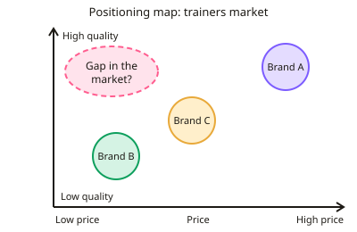

GCSE Business · Topic 6
Marketing Decisions
This topic covers marketing decisions, how a business finds the right customers and wins their sales.
We look at segmentation and targeting, how to interpret market data, and each part of the marketing mix, product, price, promotion and place.
- 5 subtopics
- 211 questions
- Free: 6.1 notes and 10 questions
In this topic
- 6.1Market segmentation, targeting and positioning, and setting marketing objectivesFree below · 42 questions
- 6.2Interpreting market data: market size, share and growth calculations, sampling, and reading charts and graphsOpen in Full Marks · 60 questions
- 6.3Product: design mix, the product life cycle, extension strategies, branding and product portfolio decisionsOpen in Full Marks · 27 questions
- 6.4Price: pricing strategies (penetration, skimming, cost-plus, competitor-based, psychological, promotional) and how they are chosenOpen in Full Marks · 35 questions
- 6.5Promotion and place: promotional methods, distribution channels and building an integrated marketing mixOpen in Full Marks · 47 questions
6.1 · Free notes
Market segmentation, targeting and positioning, and setting marketing objectives

Key points
- Market segmentation means dividing a market into groups of customers with similar needs or characteristics, so the marketing mix can be tailored to each group.
- Common segmentation methods: demographic (age, gender, income, occupation), geographic (region, climate, urban or rural), behavioural (buying habits, loyalty, how often a product is used) and lifestyle/psychographic (interests, values, attitudes).
- Benefits of segmentation: marketing spend is more targeted and efficient, products fit customer needs better, gaps in the market are easier to spot, and loyalty and sales can rise. Drawbacks: research and tailoring cost money, and each segment may be small.
- Targeting means choosing which segment(s) to aim at. Mass marketing sells one product to the whole market (e.g. Coca-Cola). Niche marketing targets a small, specialised segment (e.g. handmade vegan wedding cakes).
- Niche marketing usually means less competition and scope for premium prices, but sales potential is limited and a large rival may enter. Mass marketing offers high volumes but faces strong competition.
- Positioning is how customers perceive a product compared with rivals (e.g. budget, premium, eco-friendly). It is built through the whole marketing mix and a clear USP (unique selling point).
- A market map (positioning map) plots brands on two axes such as price and quality. It shows close competitors and a possible gap in the market. A gap may exist because there is no demand, so market research is needed to check.
- Marketing objectives are specific goals for marketing, such as increasing sales or revenue, raising market share, building brand awareness, launching a product, entering a new market or improving customer loyalty. They must support the overall business objectives.
- Good objectives are SMART (Specific, Measurable, Achievable, Realistic, Time-bound). For example: 'raise market share from 12% to 15% within 18 months'. Vague aims like 'sell more' earn little credit.
- Exam tip: always link the segment, target market or position to the case-study business (its product, price and customers). For 'most suitable' questions, justify your choice and compare it with the alternative.
In more detail
- Segmentation example: a car maker targets young drivers with a cheap, small car and families with a larger SUV, using a different marketing mix for each segment.
- Niche example: a shop selling only gluten-free food targets a small niche, but it faces less competition and can charge premium prices.
- Repositioning example: Škoda was once seen as a joke brand, but better quality and marketing repositioned it as a respected, good-value brand.
- Worked SMART objective: "raise online sales from £200,000 to £240,000 by the end of next year" is a 20% increase with a clear deadline.
Practice
Market segmentation, targeting and positioning, and setting marketing objectives: 10 questions
Pick an answer to check it, or open the answer for the explanation.
1. A firm sells anti-wrinkle cream mainly to women aged 45–65. Which segmentation method does this show?
- Positioning
- Demographic
- Geographic
- Behavioural
Show answer
B: Demographic. Age and gender are demographic characteristics, so targeting women aged 45–65 is demographic segmentation.
2. A clothes retailer stocks heavier coats in its Aberdeen stores than in its Plymouth stores. Which segmentation is this?
- Income-based
- Demographic
- Behavioural
- Geographic
Show answer
D: Geographic. Choosing stock by location and climate is geographic segmentation.
3. Which is an example of behavioural segmentation?
- Targeting households in Wales
- Targeting people aged 18–24
- Targeting customers who buy a brand every week
- Targeting households earning over £80,000
Show answer
C: Targeting customers who buy a brand every week. Behavioural segmentation uses buying habits, usage rate or loyalty. The other options use age, location and income.
4. A bakery makes only handmade vegan wedding cakes. This is an example of:
- A product portfolio
- Mass marketing
- Market penetration
- Niche marketing
Show answer
D: Niche marketing. Aiming at a small, specialised segment is niche marketing.
5. Which is an advantage of mass marketing compared with niche marketing?
- Needs no market research
- Less competition
- Easier to charge premium prices
- Potential for much higher sales volumes
Show answer
D: Potential for much higher sales volumes. Mass marketing aims at the whole market, so sales potential is larger. Lower competition and premium pricing are niche advantages.
6. On a price/quality market map no brand sits at high quality and low price. What should a business conclude?
- There is definitely a profitable gap
- There may be a gap, but research is needed to check demand
- All brands are positioned the same
- The market is too small to enter
Show answer
B: There may be a gap, but research is needed to check demand. A gap on a map may mean an opportunity, or may mean customers do not want that combination. Market research is needed.
7. What does 'positioning' mean in marketing?
- The price at which a firm breaks even
- Where a product is stored before sale
- How customers perceive a product compared with rivals
- The number of staff in the marketing team
Show answer
C: How customers perceive a product compared with rivals. Positioning is the image or place a product holds in customers' minds relative to competing products.
8. Which is the best example of a SMART marketing objective?
- Sell lots more soon
- Raise market share from 12% to 15% within 18 months
- Make customers happier
- Become the best known brand
Show answer
B: Raise market share from 12% to 15% within 18 months. It is specific, measurable (12% to 15%) and time-bound (18 months). The others are vague.
9. A business wants sales to rise from 20,000 to 23,000 units. What percentage increase is this?
- 10%
- 15%
- 13%
- 3%
Show answer
B: 15%. Increase = 3,000 ÷ 20,000 × 100 = 15%.
10. A drawback of niche marketing is that:
- Customers cannot be identified
- It prevents the use of branding
- It always forces prices down
- Sales potential is limited and larger rivals may enter
Show answer
D: Sales potential is limited and larger rivals may enter. Niche segments are small, so growth is limited, and bigger firms may enter the niche. Niche firms can still brand and often charge more.
Keep going in Full Marks
Full Marks has 42 questions on Market segmentation, targeting and positioning, and setting marketing objectives (32 more than here), set out in practice levels. You also get notes and 3D models for all 5 subtopics of Marketing Decisions, plus games, timed exams and past papers.